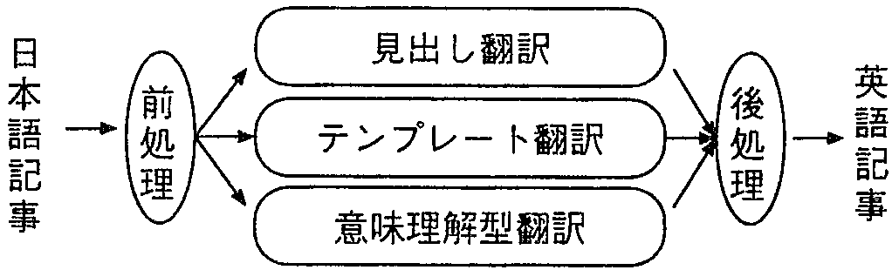
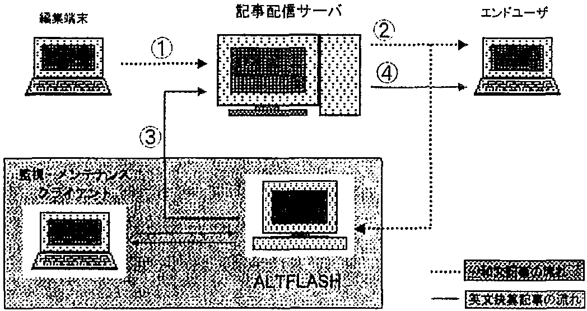
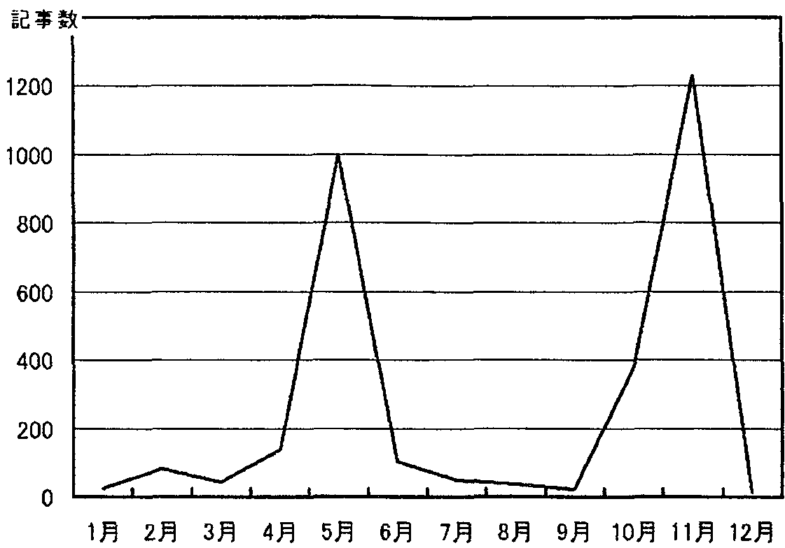

機械翻訳システムの有効な活用として, 市況速報記事を対象にした日英機械翻訳システムを開発した. システムは, ルール型翻訳とテンプレート型翻訳とのハイブリッド構成であり, 実験では, 文単位で90%, 記事単位で70%の高い翻訳正解率を得ることができた. この評価結果に基づき, 更に対象を決算速報記事に限定し, テンプレート型翻訳による自動翻訳システムALTFLASHを構築した. ALTFLASHは日本語の決算速報を英文で配信する実用システムとして導入され, 従来人手で行われていた翻訳作業に比べ, 処理時間, 翻訳品質, 費用などの面で大幅な改善効果を示した.
機械翻訳, 速報記事, 新聞, テンプレート, コーパス
機械翻訳については, これまで様々なシステムやアプリケーションソフトが研究開発されてきた. その中には, TAUM-METEO[1]やSYSTRAN[2]のように実用化されたシステムもある. しかしながら, 日本語から他言語への機械翻訳にはまだ多くの技術的課題が残されており, 後編集が不要な高品質の訳文を汎用的に提供するレベルには至っていない. これまで開発されたシステムは, 翻訳者が大量のマニュアルなどを翻訳する際の下訳用とする場合, あるいは外国のWWWの文章を読む場合のように不完全な訳であっても 利用者が概要を把握できるレベルでよいと割り切る場合に使用されるにとどまっていた.
そこで, 我々は, 日本語で表現される情報の中で, 速報性が重視される産業経済情報などの記事には定型的な表現が多いことに着目し, この分野での実用的な日英自動翻訳技術の研究を開始した. 翻訳対象を限定した実用的システムとして, 同様の研究が行われている[3],[4]が, これらは日本語からの翻訳を対象としていない. また訳文の多くは後編集不要の品質レベルではない.
本論文では, 市況速報を翻訳対象として日本語から他の言語へ翻訳するハイブリッド翻訳システムについて市況速報分野での実用性を示す. そして, システムのユーザ評価によって得られた, 情報発信型サービスにおける機械翻訳システムに要求される条件に基づき, 市況速報の中でも定型性が高い決算速報に絞って実用化した ALTFLASH(Automatic Language Translator for market FLASH reports)システムについて述べる. ALTFLASHは日本経済新聞社に1998年3月に導入され, 人手を介在することなく日経テレコムやQUICK社, ダウジョーンズ社へ翻訳された英文速報を配信している.
以下, 2.で市況速報分野に適用したハイブリッド型翻訳システムの枠組み, 3.でハイブリッド型翻訳のプロトタイプシステムの評価実験, 4.で評価結果に基いて決算報告分野に限定して構築した実用化システムALTFLASHについて述べ, 5.で今後の課題について述べる.
実験的に市況速報分野に適用したハイブリッド型翻訳システムの枠組みについて述べる.
市況速報記事では, 専門用語や略語のほか, 分野特有の表現が多用されるため, 一般の構文, 意味解析型方式の機械翻訳をそのまま適用するのは難しい. 一方, 類似の表現が多用されることから, 我々はテンプレート型翻訳システムを構築し, 市況速報分野への適用可能性を検討するための実験を行った. 実験では, 市況速報記事14週分(1995年6月から9月)のうち, 東証外国部(1日1記事), 大証(1日4記事), 東証CB(1日3記事)を対象とした. これらの記事は日本経済新聞社のテレコンデータベースから取り出し, 文献[5]の方法により日英の記事を対応づけた. 記事の例を図1に示す.
|
◇東証外国部・大引け 【ＮＱＮ】欧州株の軟調を映しさえない展開。 売買高は概算で１０万株。 売買が成立したのは３６銘柄。（値付き率５３．７％）で、このうち値上がり５、値下がり１８、変わらず２、比較できす１１だった。 イーライリリが安く、ＶＷ、ＩＢＭ、ＢＴも下げ、ドイツ銀行もさえない、 半面、モトローラが買われ、ＴＩ、アップルも高い。 *Tokyo Foreign Stocks Cls: Mostly down on weaker European shares (NQN) Foreign stocks declined Friday. An estimated 100 000 shares changed hands. Among the 36 issucs traded only hve rose 18 dropped and two were unchanged. Comparisons for the other 11 were unavailable because they did not trade on the previous day. Eli LilIy VoIkswagen and IBM softened. In contrast Motorola Texas Instruments and Apple Computer gained. |
|
◇東証ＣＢ大引け・続落−債券安嫌気し利回り銘柄下げる 【ＮＱＮ】ＣＢ・Ｑ平均は続落。 大引けにかけては下げ渋った。 債券の下落を嫌気し、東ガス（３）、東電（１）など利回り銘柄に国内金融機関などの売り注文がかさんだ。 証券会社の自己売買部門も幅広い銘柄に売りを出した。 売買高は概算で５００億円。関西電（３）、三和シャタ（２）がさえない。 半面、富士重（４）、群馬銀（４）が上げた。 エスエス（５）は株高を受けて高くなった。住友電（６）、日石（２）もしっかり。 *Tokyo CBs Cls: Broad-based selling leaves CBs weaker (NQN) Convertible bonds continued to slide Friday. Disheartened by falling government bond prices domestic financial institutions dumped high-yielding issues including Tokyo Gas (No. 3) and Tokyo Electric Power (No. 1). Dealers sold a wide range of issues. The QUICK CB Index ended at 503.39 down 0.09 after dropping as low as 503.36. Volume came to 50 billion yen. Among other decliners were Kansal Electric Power (No. 3) and Sanwa Shutter (No. 2). In contrast Fuji Heavy Industries (No. 4) aud Gunma Bank (No. 4) gained. SS Pharmaceutical (No. 5) rose on strength in its underlying stock. |
市況速報記事数か月分を通して見ると, それぞれの記事は, 日本語, 英語とも構成は同じで, 見出しと, 記事本文(市場の総括1文, 概況や背景1〜3文, 個別銘柄の様子2, 3文)からなっている.
全体的な特徴として, 日本語記事における類似表現には助詞の省略や揺らぎ, 繰返しや語尾の違いなどがあり, これらに対応することにより定型化をいっそう進めることができる. 一方, 英語記事には日本語記事にはない情報の付加や表現のバリエーションの多さが目立つ. 市場の総括部のように, 記事の発信日付から曜日を付加する程度のことは可能であるが, 一般的に不足情報を補充することは機械翻訳では不可能である.
2.1の市況速報記事の特徴を踏まえ, 図2のようにハイブリッド型翻訳システムを構成した. 見出し翻訳, テンプレート型翻訳, ルール型翻訳の各翻訳エンジンを並列に走行させ, 評価点の高い翻訳結果が一式そろった段階で翻訳結果の編集を行う. 以下では各々の処理について述べる.
|
 |
2.2.1 前処理
データベースから取り出した記事の文字コードを変換し, 各翻訳エンジンに渡すデータを編集する. 見出し翻訳処理には見出しと本文の第1文, それ以外の翻訳処理には本文を渡す. また, 括弧表現を「引用」, 「補足」, 「換言」, 「読み」などに分類し[6], 翻訳対象であれば切り出して別の文として翻訳するとともに埋め戻すための情報を後処理に引き継ぐ.
日本語の見出しは, 分野(記事種類), 場(「大引け」), 背景(「３日続伸」では「３日」), 総括(「反落」), コメント(横線以降, 欠落多し)から構成される. 図1の東証外国部のように総括がなければ本文第1文から総括に該当するキーワードを取り出し, 翻訳を行う. 図1の場合は第1文「欧州株の軟調を映しさえない展開」から「さえない」をキーワードとして抽出し, 英文の見出しの総括を“Lower”とする.
定型的な文を翻訳するには, 直接的な翻訳方法が有効である. 市況速報記事をテンプレートを用いて翻訳する場合, 変項部分は主に「企業名」と「数字」が対象となる. この場合, 企業名には独特の省略形が用いられるため, 単純な文字列切出しでは誤りが発生するおそれがある. また, 「この日の安値圈」といった名詞句も変項化することができれば, テンプレートの適用範囲が広がると考えられる.
そこで, 形態素解析を行った後, ルールと照合して変項部分を決定し, 単一単語は対訳辞書引きで, 複数単語(名詞句, 複合語に限定)はルール型翻訳で変項部分を翻訳する. 形態素解析, ルール型日英翻訳にはALT-J/E[7]を使用した. 形態素解析により単語には意味属性が付与されるため, 一般名詞と固有名詞の同型など粉らわしい表現に対する翻訳のテンプレートを制御することも可能になった.
日本語記事と英語記事は直訳的には対応していないが, 日本文と対応しそうな英文を鳥瞰してみると, 標準的な訳し方が推定できるため, それに基づいて翻訳テンプレートの作成を人手で行った. 翻訳テンプレートの例と, それが適用される日本語文及び訳文を図3に示す.
|
[翻訳テンプレートの例] (A370009 (("/売買/商い/") ("/の/が/") ("成立し") ("た") (1 * "1610") ("銘柄") ("の") ("うち") {("、")} ("/値上がり/値上がり銘柄/") {("/が/は/")} (2 * "1510") ("、") ("/値下がり/値下がり銘柄/") {("/が/は/")} (3 * "1510" ) ("、") ("変わら") ("ず") {("/が/は/")} (4 * "1610") {("で")}("、") ("比較でき") ("ず") {("/が/は/")} {5 * "1610") {("だっ") ("た")} ("。")) ("Among the " 1 "issues changing hands, " 2 " rose, " 3 " fell, " 4 " remained unchanged and comparisons unavailable for " 5 "." )) | ||||||||||||||||||||||||||||||||||||
[日本語部のグラフ表示]
| ||||||||||||||||||||||||||||||||||||
|
[適用される日本語文] 売買の成立した34銘柄のうち、値上がり11、値下がり10、変わらず4、比較できずは9だった。 | ||||||||||||||||||||||||||||||||||||
|
[翻訳結果] Among the 34 issues changing hands, 11 rose, ten fell, four remained unchanged and comparisons unavailable for nine. |
ルール型翻訳処理はALT-J/Eにより行う. ただし対象記事の特殊性を考え, 文献[3]のように専用文法と一般文法の2段階とはせず, 専門分野対応のルールと辞書を使用した[8],[9]. 専門分野辞書には金融用語6,000語, 企業名2,000社を登録した. また, 概況や背景は長文分割[10]により精度向上を図った.
記事本文に対するテンプレート型翻訳とルール型翻訳の採否を次の基準により決定し, 処理内で自動的に採点を行い, 高得点の翻訳結果を採用する.
1995年9月の市況速報記事3分野80記事を対象に, 2.で述べたシステムの評価実験を行った. 本システムによる図1の東証外国部記事の訳出結果を図4に示す. 斜体文字部分がテンプレート型翻訳によって翻訳が行われた文である.
|
Tokyo Foreign Stocks Cls: Lower NQN) Foreign stocks were clear reflected by the bearishness of European stocks Friday. Trading volume was estimated at 100, 000 shares. Among the 36 issues changing hands, five rose, 18 fell, two remained unchanged, and 11 were incomparablc. (58.7% of all listed issues changed hands). Eli Lilly is lower and Volkswagen, IBM and British Telecom also fell and Deutsche Bank also faltered. In contrast, Motorola was bought along with Texas instruments and Apple Compnter. |
翻訳テンプレートの作成は, 2.2.3で述べたように, 日本文と標準的な英文の対訳集をもとに, 人手で行った. 表1に翻訳テンプレート作成の経過を示す. データ収集の都合上, 6月は1週間分の速報記事となっている.
表1中で作成前, 作成後として示されているテンプレートの適用率には記事の種類によってかなり差があるが, テンプレート作成後の適用率は記事の種類ごとにほぼ一定であり, 作成率も徐々に減っていくことがわかる. しかし, 8月の記事では「夏休み」「盆休み」のような語を含む文で, 9月は中間期決算報告がらみの文で多くの不照合が発生した. このような年に1度の行事はほかにも考えられるため, 市況速報に対する翻訳テンプレートは1年単位で整備する必要があると考えられる.
| 東証外国部 | |||||||||||||||||||||||||||||||||||
| |||||||||||||||||||||||||||||||||||
| 大証 | |||||||||||||||||||||||||||||||||||
| |||||||||||||||||||||||||||||||||||
| 東証ＣＢ | |||||||||||||||||||||||||||||||||||
| |||||||||||||||||||||||||||||||||||
| 作成前＝テンプレート追加前のヒット文数/原文数(未知データ試験) 作成後＝テンプレート追加後のヒット文数/原文数(既知データ試験) 作成率＝作成ルール数/原文数 * いずれも月ごとの集計 | |||||||||||||||||||||||||||||||||||
翻訳結果は文単位で ◎ 冠詞などのミスを除き, ほぼ正しい英語 ○ 文の意味がわかる Δ 大意はわかるが一部に誤りが含まれる × 意味がわからない の4段階に評価し, 上位2段階を合格とした. 記事単位では, 全文が合格なら合格とした. 実験に使用した80記事では, 文単位の合格は74%(◎61%, ○13%)であるが記事単位の合格は23%(◎5%, ○18%)にとどまった. しかし, テンプレートの適用率が高い東証外国部の記事に限ると文単位で90%(◎88%, ○2%), 記事単位で70%(◎40%, ○30%)に達し, 分野によっては実用の見通しがあることがわかった.
上記の翻訳結果の評価と並行して, 情報発信者である日本経済新聞社の協力を得て, 情報発信時における機械翻訳の利用という観点において, ユーザ側から見たシステムとしての評価を行った. 評価における肯定的及び否定的側面を以下に示す.
[肯定的側面]
翻訳時間: 翻訳にかかる時間は平均して1記事当り1分程度であり, 翻訳時間の短縮には有効である. 訳語の統一: 訳出される専門用語や表現が統一されており, 情報発信サービスとして好ましい. 固有名詞等の翻訳: 数値, 企業名, 人名の翻訳は人手で作業をする場合, 特に気を遣うところであり, その部分が正しく翻訳できることの効果は大きい.
[否定的側面]
翻訳品質: 記事を配信されるユーザが機械翻訳として使用する場合には, この品質でもよいが, 情報サービスとして見た場合は品質に不足がある. 90%の精度であっても最終的に人間が後編集を行う必要があり, コストの大幅な削減は望めない. カスタマイズ: ルール型翻訳のカスタマイズに時間がかかり, なかなか望んだ訳出がされない. コスト: テンプレート型翻訳は有効ではあるが, この分野での利用を考えると年単位でのデータ整備が必要であり, 表現の揺らぎの吸収にも人手が必要となりコスト的に問題が残る.
3.の評価実験結果から, 情報受信型のシステムとしては実用化の見通しはあるものの, 情報発信型である記事配信サービスの提供という観点から見ると, まだ問題がある. 我々は, 実験の結果明らかになった情報発信システムに求められる条件をもとにシステムの再構築を行った.
実験システムに対するユーザの評価から, 実用的な情報発信システムに求められる機械翻訳システムの条件としては, 以下の三つが挙げられる.
コスト: 人手で翻訳を行う場合に対してコスト削減効果が大きいこと 信頼性: コストとの兼合いではあるが, 一定以上の翻訳品質が保たれること メンテナンス性: ユーザの意図する翻訳結果を得るためのカスタマイズや単語の登録などの作業が簡単に行えること
また, ユーザ評価中の問題点の多くはルール型翻訳に由来する部分であり, テンプレート型翻訳においては, テンプレート作成にかかるコストの削減を達成することにより問題を解決できると考えられる. そのため, テンプレート型翻訳がより有効である領域を見つけ, 訳語の統一, 正確性, 即時性といつた機械翻訳の利点を生かしたシステムの構築を試みた.
テンプレート型翻訳がより有効である対象分野を選定するため, 日本経済新聞社の速報記事の中で, 見出しだけで構成される記事を抽出し, その記事に対してn-gram統計処理[11]を行い, 分析を行った. 見出しだけで構成される記事の例を図5に示す.
|
◆株価格付・野村研がブリヂストンの1継続. ◆株価格付・野村研がダイセキを新規2. ◆東京株式, 後場一段安で始まる−日経平均の下げ幅200円弱に. ◆セコムの前期, 経常益8.6%増. ◆セコムの今期, 経常益414億円. ◆フォーバル, 前期3円増配し年10円配に. ◆日銀, 4000億円を供給. ◆米中対立, 話し合いで解決を・通産相−知的所有権問題で. ◆ビクターの前期連結, 純利益7.34倍. ◆ビクターの今期連結, 純利益60億円. |
これらの記事の分析においては, 統計処理によって文の定型部分を抽出し, 抽出された定型部分をもとに変項部分を抜き出すといったステップを繰り返すことにより, 定型性を判断した.
見出し記事中で定型性が高かったのは, 株価格付け, 配当, 決算速報などの記事であった. その中でも決算速報記事は, 企業の経常利益などを簡潔に速報する記事であり, 数値, 企業名が頻出することに加え, 通常の記事以上に情報の鮮度が重視されるため, 機械翻訳が有効な対象分野であると判断した.
決算速報は最大でも40文字程度の短い文である. それらのすべてのパターンは4.2の分析において抽出することができた. その抽出結果に基づいてテンプレート化を行った結果, 約200種類のルールによってすベてをカバーできることが確認された. 典型的なテンプレートルールの例とその適用例を図6に示す.
|
[テンプレートルール] (企業名)の前期経常益(数字1)円−−前期は(数字2)円 (Company name) FY FARENT PRETAX PET Y(No.1) VS Y(NO.2) |
|
[翻訳例] 松電工の前期経常益５１２億円−−前期は４８８億円 MATSUSHITA ELEC WORKS FY PARENT PRETAX PFT Y51.2B VS 48.8B |
また, 決算速報記事中で使用される企業名は, 日本文, 英文中とも特殊な省略をすることが多いため, 「企業の日本語正式名」, 「日本語省略型(複数登緑可)」, 「企業の英語正式名」, 「英語省略型(複数登録可)」からなる企業名データベースを作成し, それをもとに翻訳用辞書を作成した. 「日本語省略型」については, 4.2の分析によって抽出した企業名をそのまま利用している. これにより, 日本語企業名の入力の揺らぎに対応するとともに, 翻訳後の英文の長さを「英語省略型」の使い分けによってコントロールすることが可能である.
ALTFLASHの構成では2.のシステムから見出し翻訳, ルール型翻訳を取り除き, 更なる速度向上のため限定的なダイレクト変換型の翻訳処理を導入した. この翻訳処理では形態素解析を行わず, 企業名及び数値を単純に切り出して翻訳を行うため速度が向上している. しかし特殊な企業名などに関しては, 単純切出しでは失敗する可能性があるため, 形態素解析を行う通常のテンプレート型翻訳も並行して動作する.
後処理では先に結果を返した処理の翻訳結果を選択し, 送信する. また, 記事データベースをもつことによって, 日英の記事を対応づけておき, 日本語記事が修正され上書きされた場合, 対応する英語記事を上書きする.
このシステムは, 図7のように通常の記事配信過程において一般ユーザと同様に, 記事配信サーバから日本語記事を受け取り, 自動的に翻訳し, 英語記事としてサーバに送り返している. また, 別途監視システムをもち, 翻訳結果を常時モニタリングしている. 登録されていない企業名が使われたり, 日本文中にタイプミスがあった場合, 翻訳システムは翻訳を行わず, 監視システムに警告を送る.
|
 |
前述の記事データベースには, システムが翻訳できなかった文及び修正記事などの履歴が自動的に記憶される. システムの構成上, 翻訳できない記事は未登録企業名の使用, 新しい文パターンの出現の2通りに分類されるため, この情報から, 追加すべき企業名やテンプレートを容易に抽出でき, システムを改善していくことができる.
このシステムは日本経済新聞社に1998年3月に導入され[12], 人手を介在することなく日経テレコムやQUICK社, ダウジョーンズ社へ翻訳された英文速報を配信し, 2年間以上安定稼動している. 試験期間も含めた1998年の翻訳記事数の推移を図8に示す.
|
 |
図8からわかるように, 常に多くの記事が翻訳対象となっているわけではない. しかしながら, 多くの企業が3月, 9月決算のため, 5月, 11月に集中して決算発表が行われることから, 突出して記事数が多くなり, 日によっては数百件以上の記事が送信されている. この時期のためだけに多くの翻訳者を確保することも難しかったが, ALTFLASHの導入によりピーク時の稼動を抑えることができた.
このシステムの導入によって得られた主な効果を以下に示す.
日本文チェック: 日本語記事にミスがあった場合に警告が行われるため, 打ち間違いにすぐ気がつき誤りを含む記事が減少した.
人的コスト: システム導入前は複数の英文担当者が翻訳, 入力を行っていた. 英文決算速報の翻訳を自動化したことにより, これらの作業はなくなり, 翻訳者はより重要な記事の翻訳に専念できるようになった.
品質: 翻訳時における企業名や数値の入力ミスがなくなり, 英文においては100%の品質を保っている.
速度: 導入前は複数の翻訳者が並行して記事の翻訳を行っていたが, 多数の記事が集中する場合, 英文記事の発信が遅くなることがあった. 本システムの導入により日本語記事の受信から, 英文記事が1秒以内に翻訳されるため発信スピードが短縮された.
配信先によるカスタマイズ: 翻訳後の英文の長さやスタイルをテンプレートや辞書を切換で変更できるため, 配信先各々の英文スタイルに合わせた記事の配信が可能となった.
テンプレートを中心としたシステムを開発し決算速報記事の分野で実用化することができたが, 市況速報全般の翻訳においてはいくつかの課題が挙げられる.
今回, 市況速報用の翻訳ルールの作成においては, 対訳集から標準訳を作成し, 人手で行う形式をとったため, この部分に大きなコストがかることとなった. これを解決するため, n-gram統計処理による, ルールの自動抽出を試みている.
文献[11]におけるn-gram統計処理を市況速報記事9か月分(1995年6月−1996年2月, 記事数6,315, 文字数1,460,112)に適用した結果, 表2 のような結果が得られた.
| 文字列長順 | 頻度順 |
|
８時５０分に発表時間が変更に. .. ドル買いに動いた(77文字, 順度2) ７月のドイツの通貨供給量Ｍ３ ... 買い・マルク売りが(69文字, 頻度2) |
|
文字列長から見た場合, 10文字以上の長さをもつ文字列はほとんどが出現順度5以下であり, 定型部分とみなせるだけの意味のあるデータとはならなかった. また, 頻度順に見た場合, 意味のある単語が抽出されているため, 離散型の共起表現の抽出を試みたが, 要素数2の場合でも, ほとんどが出現頻度2しかなく, 意味のある文型を抽出することはできなかった.
これらの連鎖及び離散共起表現の抽出結果を分析した結果, 以下のことが原因であることがわかった.
これらの問題を解決するため, あらかじめ問題となるデータを別の文字列で置き換えることにより, 抽出効果を上げる手法[13]を考案し, 現在, ALTFLASHへ適用を進めている.
3.の実験においては, 翻訳の正解を判定する際に文単位で翻訳結果が正しいかを判定し, 合格率を算出した. しかしながら, 翻訳家による再チェックを行ったところ以下のような問題点があることがわかった.
(1) テンプレート型翻訳のルールの一部において,特定の文の後にのみ適用すべきルールがある.
例 「X社が堅調」
通常のテンプレート型翻訳では“X held firm”と翻訳され, 『安定している』の意味となるが, 「Y社が買われた」など上昇を意味する文の後に使われた場合, 同様に上昇を意味する“X rose”のように翻訳する必要がある.
(2) 同じテンプレートルールまたは同じ訳出となるルールを連続して適用する場合, 動詞の訳を変えた方が自然となる.
例 「X社が買われた」「Y社が上げた」
文として見ると, どちらの文も“〜 was bought”と翻訳して問題はないが, 2文を続けて翻訳する場合, 後者を“advanced”など別の動詞を使用して翻訳した方が自然となる.
(3) ルール型翻訳において, 前の文の解析失敗により, その後の文の翻訳時に不適当な主語などの補完が行われる場合がある.
直前の文がテンプレート型翻訳によって翻訳されているが, ALT-J/Eでは係り受けの解析ミスなどを起こしている場合, 誤った情報に基づいてその後の文脈処理[14]を行うため, 主語等の補完が正しく行われない.
これらの問題は, 市況速報記事に特化された問題点ではなく, テンプレート型翻訳で文脈を扱えないこと, 及び複数の翻訳方式の利点を生かしていないことが原因であり, ルールを適用すべき順番を別途スクリプトによって記述し[15], ルール型翻訳とテンプレート型翻訳の間で各々の解析データをやり取りすることで解決していく予定である.
今回, 決算速報記事の分野で実用化を行ったALT-FLASHシステムは, 現在も安定稼動しており, 配当記事や業績修正の記事への拡張が検討されている. また, 市況速報システムについても更なる訳出の向上を求め, 研究を進めている. 今後は, 経済以外の他分野ヘの拡張や他の言語べの対応などについても検討を行う予定である.
システムの評価, 構築に多くの御協力を頂いた日本経済新聞社の皆様, NTTアドバンステクノロジの皆様に感謝致します.
| 内野 一 1987茨城大・工・情報卒. 1989同大大学院修士課程了. 同年日本電信電話(株)入社. 現在, NTTサイバーソリューション研究所研究主任. 情報処理学会, 言語処理学会各会員. |
| 白井諭 (正員) 1978阪大・工・通信卒. 1980同大大学院修士課程了. 同年日本電信電話公社(現NTT)入社. 1998より国際電気通信基礎技術研究所へ出向. 1994第30回日本科学技術情報センター賞(学術賞), 人工知能学会1994年度論文賞, 2000 IEEE ICTAI最優秀論文賞各受賞. 著書「日本語語彙大系」(岩波書店, 共編, 1997). 情報処理学会, 言語処理学会各会員. |
| 横尾昭男 (正員) 1980電通大・電気通信・電子計算機卒. 1982同大大学院修士課程了. 同年日本電信電話公社(現NTT)入社. 1997よりATR音声翻訳通信研究所へ出向. 2000日本電信電話(株)へ復帰. 現在, NTTコミュニケーション科学基礎研究所主幹研究員. 1994第30回日本科学技術情報センター賞(学術賞)受賞. 著書「日本語語彙大系」(岩波書店, 共編, 1997). 情報処理学会, 言語処理学会, 人工知能学会各会員・ |
| 大山芳史 (正員) 1977阪大・工・電子卒. 1979同大大学院修士課程了. 同年日本電信電話公社(現NTT)入社. 現在, NTTコミュニケーション科学基礎研究所社会情報研究部長. 2000 IEEE ICTAI最優秀論文賞受賞. 著書「日本語語彙大系」(岩波書店, 共編, 1997). IEEE, 情報処理学会, 言語処理学会, 社会言語科学会各会員. |
| 古瀬蔵 (正員) 1982九大・工・情報卒. 1984同大大学院修士課程了. 同年日本電信電話公社(現NTT)入社. 1990よりATR自動翻訳電話研究所, ATR音声翻訳通信研究所へ出向. 1997日本電信電話(株)へ復帰. 現在, NTTサイバーソリューション研究所主任研究員. 情報処理学会, 言語処理学会各会員. |